Pfandly Support
Pfandly in 30 seconds
How the deposit (Pfand) loop works — the same three steps the in-app How it works sheet shows:
- Return your bottles. Drop empties into the Pfandautomat at any supermarket and take the printed bon.
- Scan the paper bon. Open Pfandly, tap +, and point your camera at the barcode — Pfandly saves the value.
- Redeem at checkout. At any self-checkout, show your bon barcode to apply the deposit to your bill.
1 · Getting started (first launch)
When you open Pfandly for the first time, a short onboarding tailors deposit rules and language. You can change both later in Settings.
Choose your country
We tailor deposit rules to where you shop. Pick Germany or Austria, then tap Continue.
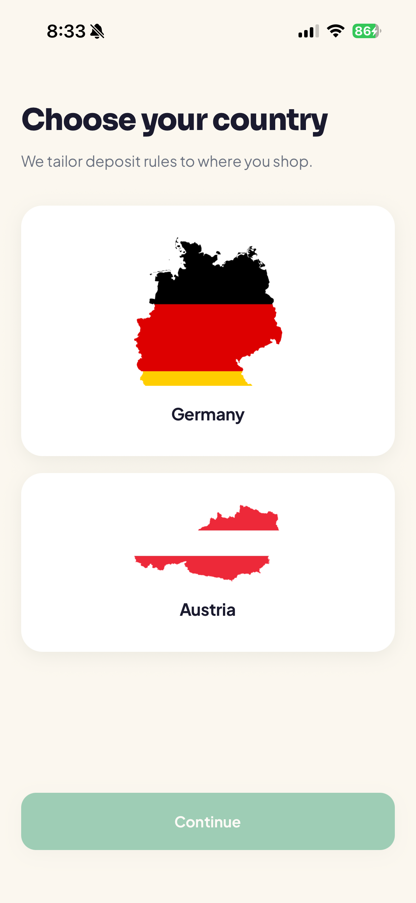
Choose your language
Pick Deutsch or Englisch, then tap Los geht's / Get started. Changeable anytime under Settings → Language.
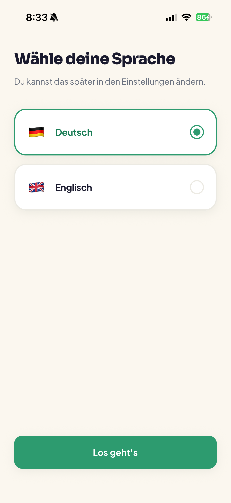
Feature tour
After country and language, a 6-slide swipeable tour highlights key features (save any bon, AI receipt scan, your Pfand pot, redeem at checkout, your stores, quick actions). Tap Next to move through it or Skip to jump straight in.
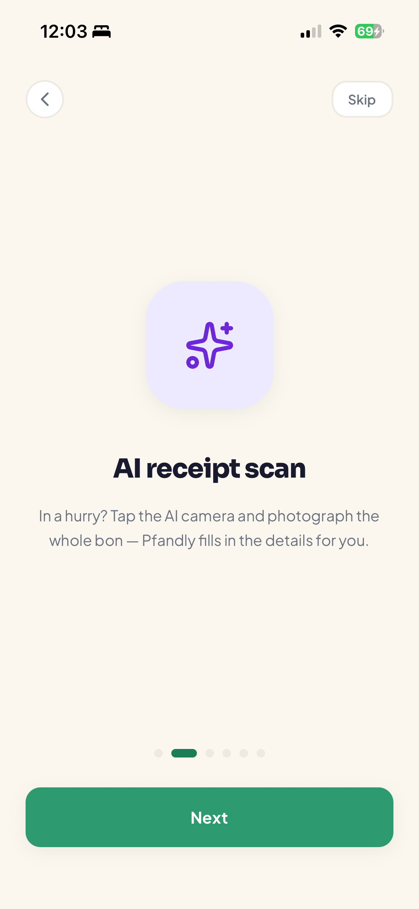
2 · Your Wallet (home)
The Wallet tab is your home base.
- The green Pfand pot card shows the total value of all bons still ready to redeem, plus an approximate bottle count.
- Saved bons lists each bon with its store, when it was added, and its value. The "N ready" label counts unredeemed bons.
- Tap the green + (bottom-right) to add a new bon.
- Tap a bon to open its details. Long-press a bon for quick actions.
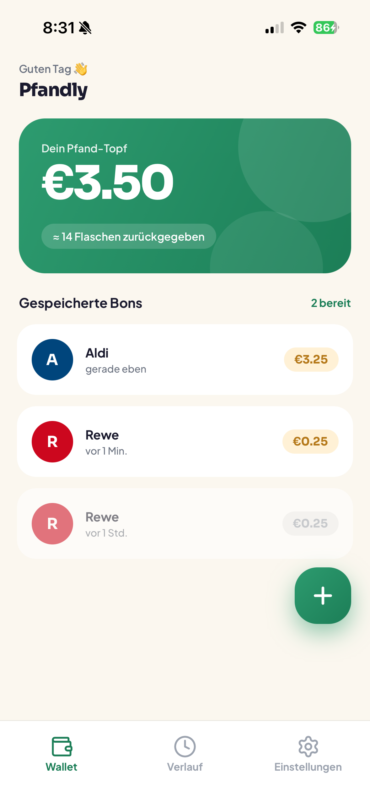
Quick actions (long-press a bon)
Open bon (full-screen barcode), Mark as used (moves it out of your ready pot), Edit (change amount, code, store, or address), Delete (remove permanently).
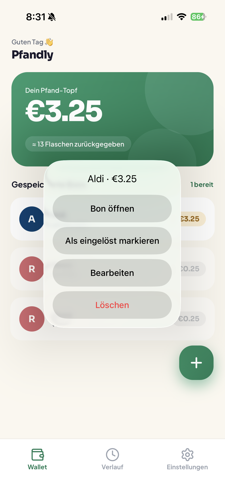
3 · Adding a Pfandbon
Tap + to open New Pfand. Type the details, scan the barcode, or let the AI scanner read the whole receipt.
The New Pfand form
Bon code (the long number under the barcode; type it or tap the scan icon), Amount (the euro value), Store (pick from your stores), Advanced (barcode format, store address, Use current location). Save to wallet enables once the code is at least 6 digits and the amount is above €0.
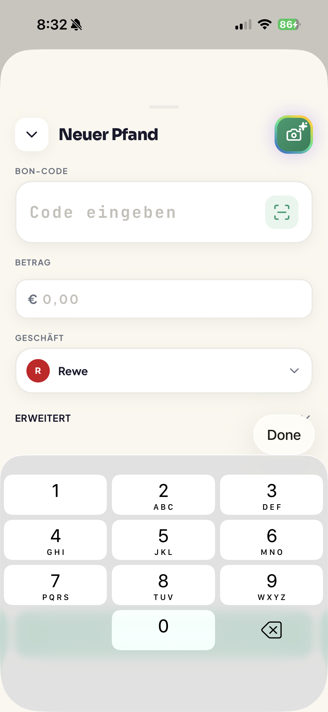
AI bon scan (the rainbow camera button)
Tap the colorful camera button (top-right of New Pfand) to scan the whole receipt. Pfandly opens a document scanner with auto-capture, then reads the barcode and text and fills in the code, amount, store, address, and date for you.

Live barcode scanner
Tapping the scan icon in the code field opens a live camera with a framing box. It captures the code automatically and returns you to the form.
4 · Bon details & redeeming
Bon detail
Tapping a bon opens its detail screen: the barcode, the amount, when it was added, and a Details card (code, format, address, bon date, item count). The address row is tappable to open the map. Buttons: Open bon, Mark as used (or Use again to revert), Delete bon.
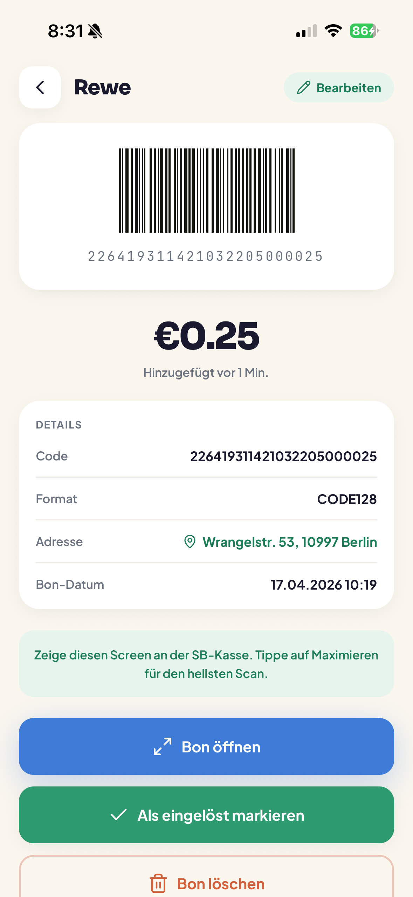
Full-screen barcode (redeem)
This is what you show at the self-checkout. The barcode is rotated landscape and brightness jumps to maximum automatically. Tap the green ✓ to mark the bon used, or ✕ / swipe down to close.
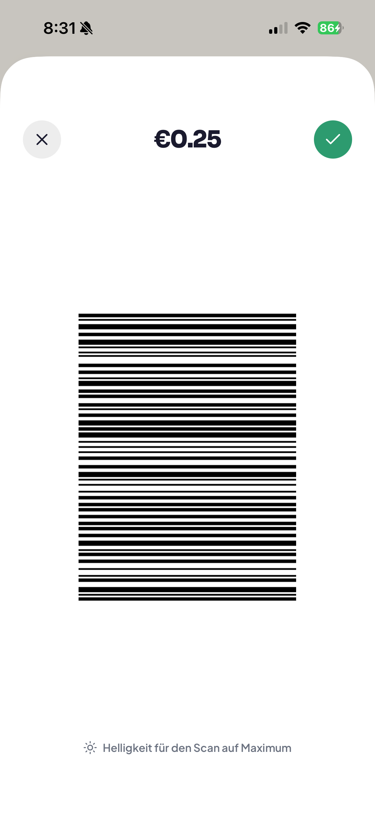
Store map & directions
Opened by tapping a bon's address. Shows the store on a map with a pin; tapping the pin opens directions in Apple/Google Maps.
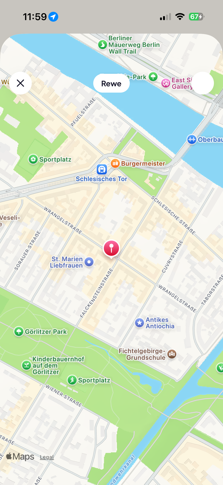
5 · History
The History tab shows your lifetime saved total, a count of bons and bottles, and filter pills — All / Pending / Used — over the full list of every bon you've added.
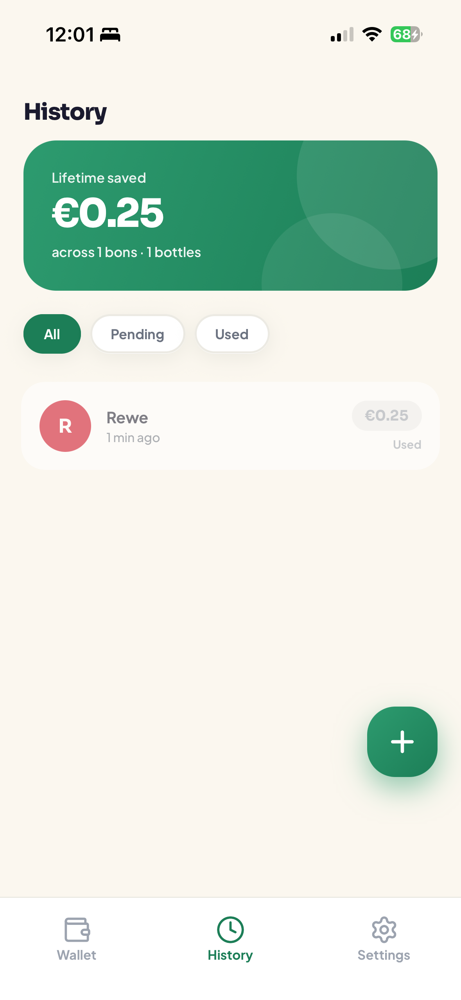
6 · Settings
The Settings tab holds preferences, your stores, info, and the danger zone.
Preferences & My stores
Language and Country selectors at the top. My stores — the five defaults (Rewe, Edeka, Aldi, Kaufland, Lidl) can't be removed; add your own below.
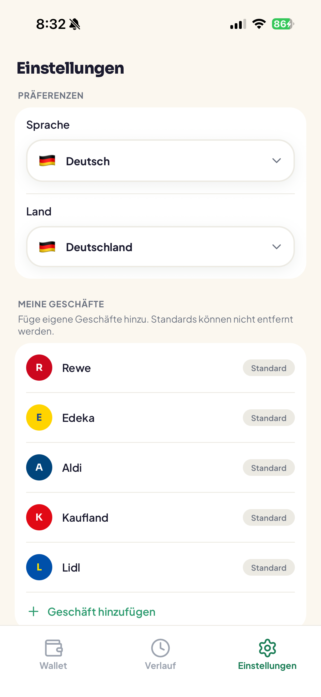
Add a store
Tap Add a store to create a custom store: name, a single letter, a background color, and a letter color, with a live preview. Tap Add store to save.
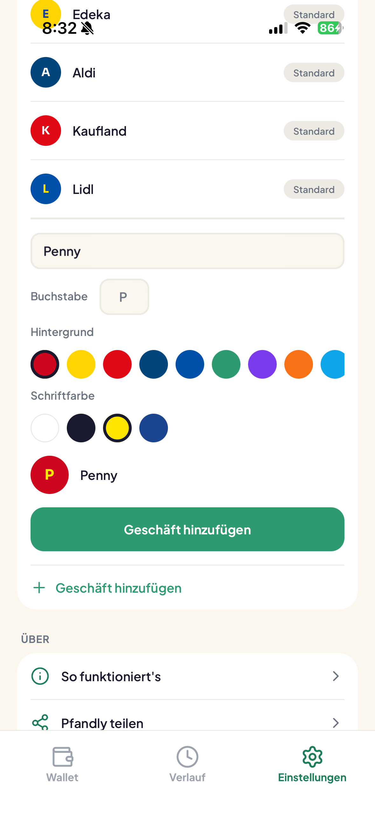
How it works sheet
The About section's How it works row opens a sheet with the three-step explainer (return → scan → redeem).
Clear all data (Danger zone)
The Danger zone → Clear all data row opens a confirmation where you must type DELETE to erase all bons and personal data. This cannot be undone and returns you to onboarding.
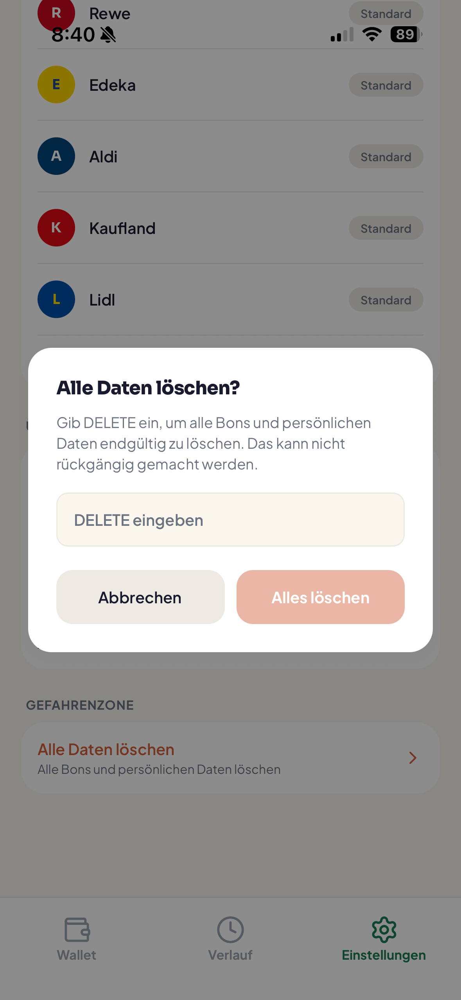
Frequently asked questions
Do I need an account?
No. Pfandly has no sign-up. Everything is stored locally on your device.
Where is my data stored? Is it private?
All bons and settings live on your phone. See the Privacy Policy linked below.
The amount wasn't read from my receipt.
The AI scanner fills the barcode and asks you to check the rest. Enter the euro amount manually in the Amount field, then save.
The barcode won't scan at the self-checkout.
Open the bon and tap Open bon for the full-screen, max-brightness barcode. Hold the screen flat and close to the scanner. If it still fails, most checkouts let you type the long code from the Details card manually.
Can I edit a bon after saving?
Yes — long-press it and choose Edit, or open the bon and tap Edit.
What does "Mark as used" do?
It removes the bon from your ready Pfand pot but keeps it in History. You can Use again to revert it.
How do I add a store that isn't listed?
Settings → My stores → Add a store. The five default chains can't be removed.
How do I switch language or country?
Settings → Language / Country. No reinstall needed.
Why does the screen get bright when I open a bon?
Pfandly maxes out brightness so checkout scanners read the barcode reliably, then restores your original brightness when you close it.
How do I delete everything?
Settings → Danger zone → Clear all data, then type DELETE. This is permanent.